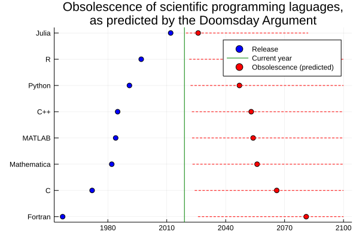

On the Apocalypse, programming languages and quantum suicide
In Good Omens, Agnes Nutter, Witch, predicts the Apocalypse with extraordinary accuracy: on a specific date, a little bit after tea time. The end of the world is not only a subject of fiction. Serious (and less serious) scientists, politicians, entrepreneurs, and other contemporary prophets have suggested more potential causes than I would dare to count. It might surprise you that there actually is a formula that can predict how long our civilization, or just about anything, will last, and it hardly requires any expert knowledge or complex calculations! The Doomsday Argument is so simple, so elegant that it seems too good to be true. Yet, it is hotly debated among professional and amateur philosophers who can all not quite agree on why it could not possibly hold. This debate is far-reaching since the Doomsday Argument touches all the big questions are pondering about: will we reach the singularity?, are we living in a simulation?, and where are all the aliens?
You are not special
The central idea of the Doomsday Argument is a humbling one: you and I are merely ordinary beings not in a special place in the grander scheme of things. This idea is formulated in the Copernican principle, defined below.
Copernican principle: you, as an observer, are not in any particularly special time or place.
The Doomsday Principle is a specific application of this idea. Suppose that we make a list of all humans who ever lived and will ever live, ordered by time of birth, i.e., Adam1, Eve, …, you, …, last person who ever lived. Surely, you would be surprised if you happen to be at the very beginning of that list, just as I deem it unlikely that your name appears on the first page of the phone book. Similarly, it would be an unfortunate coincidence if you and I happen to be one of the tens of millions (out of billions) of last people ever to be born. We are very likely somewhere in the middle of that list. Probably not too close to the beginning and not too close to the end.
Based on fossil evidence, anatomically modern humans arose about 200,000 years ago. Hence, it would not be a poor estimate to say that humanity still has roughly 200,000 years left. Enough time to justify worrying about global warming, but not quite enough, such that the sun running out of nuclear fusion would be an issue.
One can formalize the Doomsday Argument using the language of Bayesian reasoning and by assuming vague priors. I find that the figure below suffices.
It is quite easy to derive 95% confidence intervals. Let us say that we are in the 95% middle part. Best-case, we have only seen 2.5% (1/40) of the total span. This would put the end at 39 times the current duration. In the worst case, we have already seen 97.5% of humanity’s story. This means that there is only 1/39 of the period up to now left…
One can also estimate the end of civilization in a slightly different way. Instead of taking the timeline of when humanity started, one could argue that it is more sensible to take the number of people that have been born to predict the number of people that will be born. The cumulative number of humans having been born is roughly 70 billion (lifting this figure from Gott’s original paper proposing this argumentation). So the number of people yet to be born should be between 1.8 billion and 2.7 trillion, with 95% confidence. Translating this in years humanity has left requires making assumptions one future demographics. Assuming everything remains roughly the same, doomsday will fall between 12 and 18,000 years from now.
The massive uncertainty of the predictions, together with the two conflicting forecasts (depending on how they are made), can be seen as severe critiques on the Doomsday Argument. I am willing to still accept this theory, since making predictions always requires assumptions. Different assumptions will lead to different outcomes. The extreme uncertainty is a consequence of the tiny amount of information that is used. The predictions are still sobering, the world is unlikely to end in the next decade, nor are we likely to reach for the stars and propagate or species over the whole galaxy for the next million years.
Choosing a scientific programming language
Rather than predicting the end of the world, let us apply the Doomsday Argument to something less critical2: the relevance of programming languages! Below, I have used the theory on a series of popular programming languages in scientific computing. I added 80% confidence bands to each prediction, capped off at 2100 because I don’t particularly care what people use when I am under the sod.

Starting PhD students might now consider Julia as their primary programming language. It should be relevant for roughly the period of a doctorate. Python or C++ might still last for a career. Who still uses MATLAB has likely already had a career in this language. Fortran is here to stay, at least for the near future. Note that the lower bounds are all very soon. Almost all programming languages can become irrelevant overnight.
What is around will remain around; this is called the Lindy effect. The Doomsday Principle is conservative, the bets are always placed on whatever is around the longest. The Coca Cola company will be around after the last burger is served in MacDonalds, and Christianity is expected to outlast Islam, but nothing will last forever.
Simulations and aliens
The Doomsday argument is popular among physicists and cosmologists. We only have one universe or earth. The Doomsday Argument allows us to leverage the most out of a single data point. By following its logic, we can reason about some thought-provoking theories about life, the universe, and everything.
Take the Simulation Hypothesis, popularized by the influential Swedish philosopher Nick Bostrom3. It states the universe around us may very well just be an intricate computer simulation, perhaps a homework assignment of a physics major of some advanced cosmic civilization. Bostrom argues that if simulating worlds is possible, the number of simulated people would greatly outnumber the real people. To be more specific, he claims that at least one of the below statements is likely true (the paper provided Bayesian probabilities):
- intelligent civilizations generally destroy themselves before reaching a singularity where simulating people is possible;
- posthuman civilisations have no interest in simulating their evolutionary history;
- we are very likely to live in a computer simulation.
While I agree with the basic outline of these arguments, I do not really believe that we are in a simulation. Following the Copernican principle, if civilizations routinely leave their home planet to colonize vast chunks of their galaxy, we are vastly more likely to be a part of it than not. This does not seem to be the case, so I would put my money on option 1.
In general, the ideas of the Doomsday Principle are quite pessimistic for sci-fi fans. Given what we observe, intelligent life seems to be quite rare. If the aliens exist, they would have visited us already.
Quantum suicide
Why are we living in a universe with all its fundamental physical constants so perfectly tuned to allow the formation of stars, atoms, physicists, and teacups? Self-sampling can explain this seemingly cosmic self-tuning. If there exists a vast sea of universes, each with slightly different fundamental physical constants, it makes sense that we happen to inhabit one suited for life. How else could we observe it?
Even though multiverses sound like something from a science-fiction, they are actually taken seriously by a significant fraction of physicists. In the book Our Mathematical Universe, cosmologist Max Tegmark suggests that there are several layers of multiverses. For example, multiverses provide an elegant (though controversial) way of interpreting quantum physics. Every possible outcome of a quantum measurement splits the universe into different ‘worlds’, one where each potential event happens. Tegmark has suggested a diabolical way of proving this theory: a game of quantum suicide. Have a machine that flips a virtual coin (generates a random bit) by some quantum process and hook it to a gun such that the gun fires when the ‘coin’ returns ‘head’. Place this gun to your head, and repeat this experiment as many times as you want. Remember, every session has a fifty percent chance of making the gun killing you instantly. Now, every session splits the world in two. But you, an observer, are violently eliminated from the one where the gun has fired. So, from your point of view, the weapon will never fire. After ten sessions, the probability of this happening by luck is less than 1 in 1000. After twenty iterations, less than one in a million, likely enough to convince anyone of the many-worlds interpretation of quantum mechanics.
If quantum suicide works, it would theoretically be possible to harness this to force yourself into parts of the multiverse that you like. Suppose you buy a lottery ticket, and you rig your quantum suicide machine to kill yourself if you don’t win. This will force your consciousness to be in the tiny part of the multiverse in which you are a millionaire. However, don’t try this at home! Subjectively, you will survive this macabre experiment, from the point of your loved ones, you will have died4. This is the paradox of quantum suicide, you can only prove it to yourself!
Conclusion
The Doomsday Argument is a mind-boggling concept, deceptively simple, full of paradoxes, obviously correct and yet violates all logic. Much of the hottest topics of our time, the end of the world, the Simulation Hypothesis, the Fermi Paradox, Superintelligent AI, etc. have some roots in it or can be approached by it. Most of this blog post is based on The Doomsday Calculation, by William Poundstone. I could not put it down, and it provides topics for conversations for plenty of drinking conversations. Or hot tub sessions.
Footnotes
Footnotes
Not the biblical Adam, but the person that could be the first of species we consider anatomically modern humans.↩︎
Though no less quarreled over in by tech people.↩︎
The fiery discussions about the Simulation Hypothesis have famously made Elon Musk and his brother vow that they would no longer discuss it when sitting in a hot tub. It is unknown what they do talk about nowadays.↩︎
A different, more technical reason why this would not work in practice is that you are far more likely to push yourself into a world where your machine malfunctions rather than you winning the lottery.↩︎